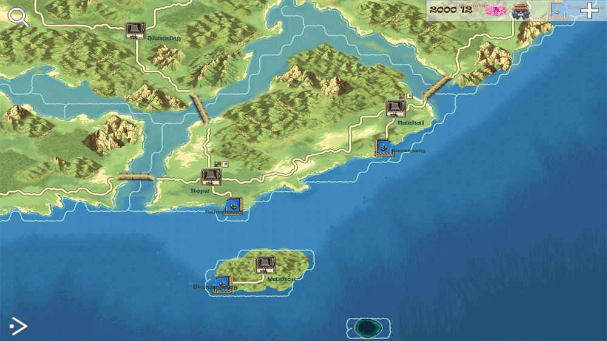
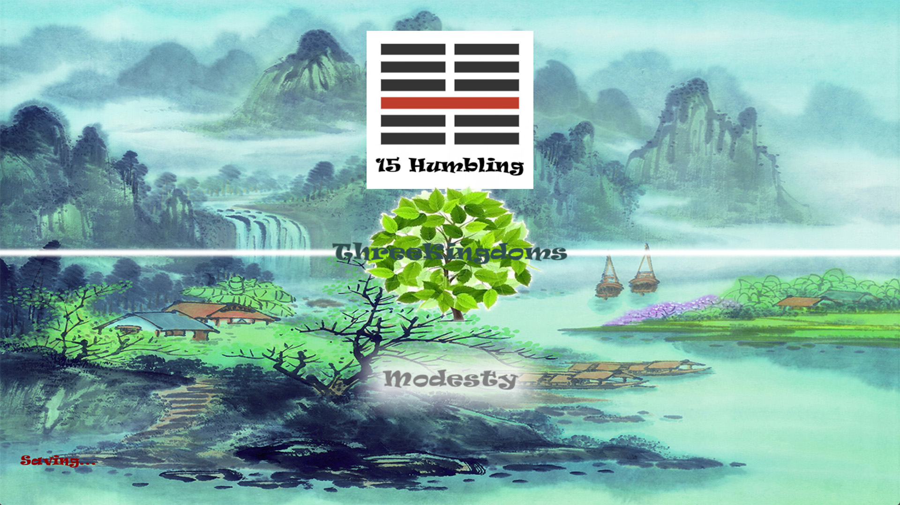

The classic · Renewal in progress
SanguoSeason
A familiar world, renewed with care.
Return to SanguoSeason: painted cities, a wide strategic map, and the warmth of the Gusu scroll. A classic being renewed without leaving its past behind.

01 · The project
A familiar world, renewed with care.
SanguoSeason, known in Chinese as 三国春秋, is the classic historical strategy game being renewed. Its broad map and painted city life belong together: a realm to consider, and places that feel lived in.
The renewal is not Sanguo3D. It keeps the older game’s name and its connection to the Gusu Prosperity painting. Blue-green mountains can bring new life to that frame without replacing its familiar warmth.


02 · Reading room
The scroll, the setting, and the game
The classic’s visual identity draws on streets, waterways, houses, and the everyday life of the Gusu scroll. That is an artistic inheritance, not an exact reconstruction of the Three Kingdoms: the painting itself comes from a much later era.
03 · Workshop
What stays with the classic
Blue-green landscape artwork has entered the renewed main menu. The task ahead is integration: keeping the Gusu-inspired city atmosphere while finding a place for the new mountains.
The balance is still being refined. New interface work should make the classic easier to return to, not turn it into a different game. Archive images on this page remain labelled as older material.
Looking for the separate 3D project? Visit Sanguo3D (the current development codename). Its blue-green landscapes can be a primary visual language; here they are a companion to the classic’s heritage.
04 · SanguoSeason
Downloads & availability
The Windows ZIP and Android APK below come from the previous website. They are legacy packages, not verified releases of the renewal. Store links will appear when confirmed.
Before trying a legacy build
Keep a separate backup of your saves. Save compatibility, current-device support, and English-language availability have not been established for these packages. No checksums or compatibility guarantees are supplied here.
Is the Android APK a store release?
No. It is a direct installer from the legacy website. Check the source and device compatibility before installation; do not bypass security warnings for a file whose origin you cannot verify.
Does this English page mean the game is in English?
Website language and game localization are separate. Check the language support of the specific build before downloading.
What if a link no longer works?
Legacy packages are hosted separately and may become unavailable. Do not assume a similarly named file from an unrelated website is the same build. Check this project page for updated channels.
Windows
Legacy ZIP from the previous website. It is not identified as the renewed edition; back up existing saves before trying it.
Get legacy ZIPAndroid
Legacy APK from the previous website. A direct installer, not a Google Play release; check device compatibility before installation.
Get legacy APKMicrosoft Store
A store listing for the renewed SanguoSeason has not been linked on this site yet.
Link not yet listedApp Store
A store listing for SanguoSeason has not been linked on this site yet.
Link not yet listedGoogle Play
A store listing for SanguoSeason has not been linked on this site yet.
Link not yet listed